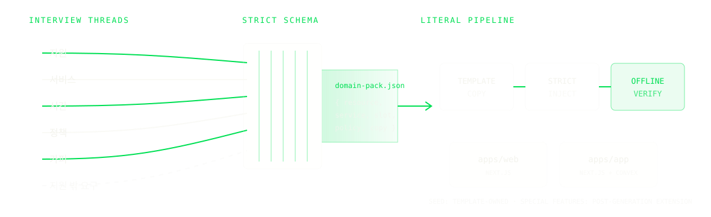

헤어살롱
커트 30분 × 디자이너 1명
60 MINUTES · OFFLINE VERIFIED
챗봇 한 장이 아니라, 예약을 받고 충돌을 막고 운영자가 이어받는 코드베이스까지.

15:00 디자이너 1명을 두 손님이 요청해도 충돌·홀드·소유권·취소 규칙이 한 번만 예약시킨다.
오늘 증명: scaffold → inject → install/typecheck/lint/build · 다음: setup/live QA/deploy · [R1-R4]
AI를 설명하는 사람이 아니라,
AI 제품을 반복해서 출하한 개발자입니다.
오늘은 학력보다 실제로 만든 수와 운영 경험만 남겼습니다.
출처: 강사 제공 프로필
커트 30분 × 디자이너 1명
좌석 1개 × 1시간
인접 좌석·자정 넘김 미지원
객실 1실 × 1박
다박·부가서비스 미지원
코트 1면 × 1시간 · 날씨/예약금 없음
거수로 결정합니다. 동률·무응답이면 헤어살롱. capability 밖 요구는 후속 확장으로 분리합니다. [R15-R16]
커트 · 디자이너 수진 · 30분
손님 A 손님 B최종 책임자: ______
이 강의에서 Agentic SaaS는 대화가 서버 도구로 상태를 바꾸고,
권한·정책·실패를 서버 코드가 책임지는 SaaS입니다.
Verify = install·typecheck·lint·build. live QA는 SKIP.
생성 뒤에는 독립적으로 실행·배포되는 제품이다.
[C1][C2] · R1-R10
한 저장소라고 한 번에 원자적으로 배포되는 것은 아닙니다. [R6-R10]
고객·자원·예약이 지금 어떤 상태인지 저장합니다.
변경된 결과를 구독 UI에 전달
read → check → write를 한 transaction으로 실행
나중 일을 durable하게 등록, punctual 보장은 아님
예약 정책은 Convex가 아니라 Jeomwon mutation 코드가 구현합니다.
[C3] · R11-R13
충돌 검사
소유권 기록
새 슬롯 재검사
정책에 따라 분기
[C3] · R14

자연어가 임의 코드를 쓰는 것이 아니라 닫힌 설정을 채웁니다. 팩 밖 전문 기능은 생성 후 별도 확장입니다. [R1-R4]
내 업종을 지원 범위 안에서 인터뷰하고,
확정한 값을 domain-pack.json으로 정리해줘.
모르는 값은 추정하지 말고,
지원 밖 기능과 충돌·소유권 규칙을 따로 표시해줘.확정 값 · 미정 값 · 지원 밖 요구 · 충돌 책임자
풋살장 · 코트 ____ · ____분
팀 ____ 팀 ____경계: ____ / ____ / ____ / ____
# 1. domain-pack.json을 저장한 뒤
$ bun skill/scripts/bootstrap.mjs \
../salon-demo "Salon Demo" \
./student/salon-domain-pack.json
scaffold template → build/salon-demo
inject domain.config.ts
verify install · typecheck · lint · build
PASS OFFLINE VERIFIED
# 화면 실행 · 인증 · live QA · 배포 증거가 아니다.정본 template을 새 target으로 복사
닫힌 설정과 선택형 이메일 샘플 주입
오프라인 계약 검사. live QA는 별도
안전 입력: “2시간 뒤”, “내일” 또는 직접 slot 선택. literal 15:00 문장은 데모에서 쓰지 않습니다.
8월 12일 · 디자이너 수진
사전 provision된 참조 화면입니다. 방금 bootstrap한 target의 live 실행이라고 주장하지 않습니다.
☐ bun x convex login · 계정 연결
☐ OAuth/dev deployment · Chromium · 11-gate contract
Web과 App을 독립 project/root로 연결
별도 deployment와 deploy key, URL 확인
[C1][C2] · R3-R4, R8-R10
reservation hold는 슬롯 임시 점유이지 카드 승인 hold가 아닙니다. Polar sandbox E2E는 미실행입니다. [R17-R20]
자리 ____ · 손님 ____ / ____ · 경계 ____ / ____ / ____ / ____
48–72시간 뒤, 오늘과 다른 업종으로 같은 7단계를 다시 실행하세요.